Electrónica de verdad · sin ordenador · sin código
Taller de Electrónica
17 experimentos para tocar la electricidad con las manos. Primero se hace, luego se entiende.
Edad: desde 12 añosCon: tu kit de Arduino (sin programar)Método: hacer → observar → entenderSesiones: 17 prácticas + proyecto
Cómo funciona cada práctica
Cuatro pasos, siempre en el mismo orden
La regla de oro de este taller: nunca se explica antes de tocar. Primero montas el experimento y ves qué pasa. Solo después, cuando ya lo has visto con tus ojos, viene la explicación. Así el "por qué" se pega, porque responde a algo que acabas de sentir.
PASO 01
Hazlo
Monta el circuito siguiendo los pasos. Sin pensar todavía en teoría.
PASO 02
Observa
¿Qué ha ocurrido? Míralo bien y descríbelo en voz alta antes de leer nada.
PASO 03
¿Por qué?
Ahora sí: la explicación de lo que acabas de ver. El momento "ajá".
PASO 04
Ve más allá
Un reto para cambiar algo y predecir qué pasará. Vuelve al paso 1.
SEGURIDAD Leer esto antes de tocar nada
Con pilas normales esto es muy seguro, pero hay cuatro reglas que no se saltan nunca:
Solo pilas. Jamás un enchufe de la pared ni un cargador de móvil. En este taller nunca hay más de 9 voltios.
Nunca unas el + y el − de la pila directamente con un cable (eso es un "cortocircuito"): la pila se calienta mucho. Siempre debe haber algo en medio (un LED con su resistencia, una bombilla…).
El LED siempre lleva su resistencia. Un LED conectado "a pelo" a la pila se quema en un segundo (y a veces con un pequeño chasquido).
Un adulto cerca la primera vez, y nada de meterse pilas ni cables en la boca. La pila de 9 V pica en la lengua: no es un juguete.
Tu caja de herramientas
Qué vas a necesitar
Casi todo sale de un kit de Arduino normal. Lo usamos como una caja de piezas de electrónica, no como un ordenador: la placa Arduino se queda descansando en la caja. Lo único que quizá tengas que comprar aparte es un portapilas y, muy recomendable, un multímetro barato.
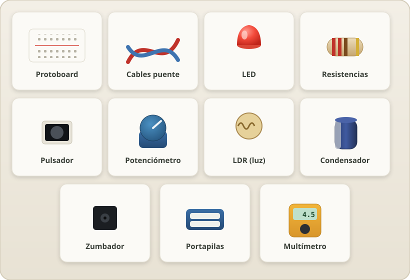
Las piezas que usarás, para que las reconozcas a simple vista
Protoboard
placa blanca de agujeros
Cables puente
jumpers de colores
LEDs
varios colores
Resistencias
220Ω, 1k, 10k…
Pulsador
botón de 4 patas
Potenciómetro
mando que gira
LDR
sensor de luz
Condensadores
electrolíticos µF
Zumbador
buzzer o motorcito
Portapilas
2–4 pilas AA · comprar
Multímetro
recomendado · comprar
Motor + hélice
para el ventilador
Cables con pinzas
para el juego del pulso
Chatarra
monedas, llaves, papel Alu…
La idea que lo explica todo
La electricidad es como el agua en una tubería
Antes de empezar, quédate con esta imagen. La usaremos una y otra vez. Imagina el agua corriendo por tuberías: es la mejor forma de "ver" algo que en realidad es invisible.
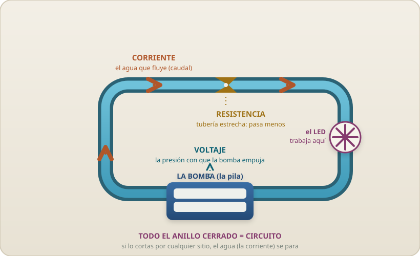
La misma idea en una imagen: bomba (voltaje), agua que fluye (corriente), estrechamiento (resistencia) y anillo cerrado (circuito)
Corriente
El agua que fluye por la tubería. En electricidad, es la cantidad de electricidad que pasa. se mide en amperios (A)
Voltaje
La presión que empuja el agua. Cuanto más alto el depósito, más empuje. Las pilas dan ese empuje. se mide en voltios (V)
Resistencia
Una tubería estrecha o pisada que deja pasar menos agua. Frena la corriente. se mide en ohmios (Ω)
Circuito
El recorrido cerrado de tuberías. Si lo cortas por algún sitio, el agua deja de correr. tiene que ser un anillo completo
Bloque A
La electricidad se mueve
01
Circuito cerrado
Enciende tu primera luz
Tiempo: 15 minNivel: muy fácil
NecesitasPortapilas1 LEDResistencia 220Ω2 cables
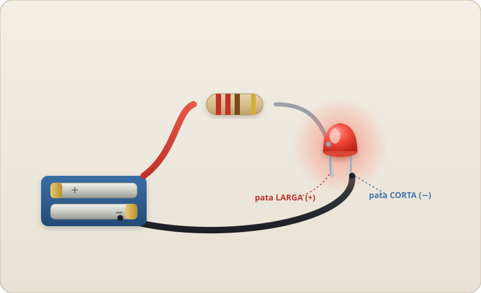
Así se ve el anillo completo: pila → resistencia → LED → pila
Hazlo
Fíjate en el LED: tiene una pata larga (el +) y una corta (el −).
Conecta un cable del + de la pila a una pata de la resistencia. ¿Cuál? Vale una de 220 Ω; también sirven valores mayores (330 Ω, 470 Ω o 1 kΩ): el LED brilla un poco menos pero no se estropea. La resistencia no tiene lados, da igual por qué pata la conectes. Lo importante es que siempre lleve una.
La otra pata de la resistencia, a la pata larga del LED.
De la pata corta del LED, un cable de vuelta al − de la pila.
Cuando el anillo se cierre… ✦ luz.
Observa
Ahora suelta uno de los cables. El LED se apaga al instante. Vuélvelo a tocar: se enciende. No importa qué cable sueltes, siempre pasa lo mismo.
¿Por qué?
La electricidad no salta por el aire: necesita un camino completo, en anillo, que salga del + de la pila y vuelva al −. A eso se le llama circuito cerrado. Si cortas el anillo por cualquier punto (soltando un cable), el agua deja de correr por toda la tubería, no solo por ese trozo. Por eso da igual qué cable sueltes.
Ve más allá
¿Y si le das la vuelta al LED (pata larga donde iba la corta)? Predice qué pasará antes de probarlo. (Guarda la respuesta: la resolveremos en la práctica 12.)
02
Conductores y aislantes
¿Qué deja pasar la electricidad?
Tiempo: 20 minNivel: fácil
NecesitasEl circuito de la P1Objetos variosMina de lápiz
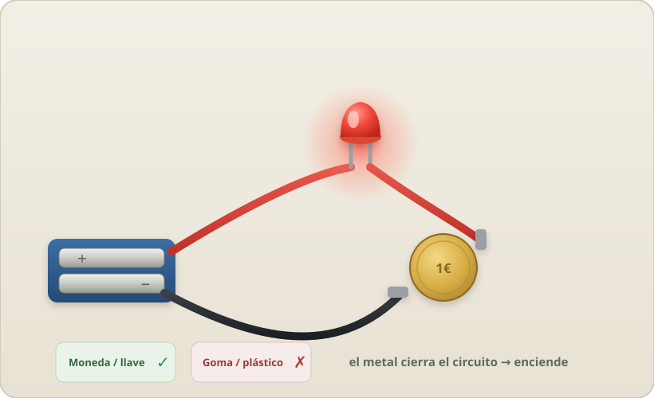
El metal cierra el circuito y enciende; la goma o el plástico, no
Hazlo
Abre el circuito anterior dejando dos puntas de cable sueltas (el LED apagado).
Ve tocando esas dos puntas contra distintos objetos, como si el objeto fuera un puente: una moneda, una llave, papel de aluminio, una goma de borrar, un trozo de plástico, papel, madera, tu dedo…
Prueba también con la mina (grafito) de un lápiz y con un dedo mojado en agua con sal.
Observa
Los metales encienden el LED. El plástico, la goma, la madera y el papel no hacen nada. La mina de lápiz lo enciende… pero más flojito. El agua salada, un poquito.
¿Por qué?
Hay materiales conductores (dejan pasar la electricidad: casi todos los metales) y aislantes (no la dejan: plástico, goma, madera seca). Por eso los cables son de cobre por dentro y plástico por fuera: el cobre lleva la corriente y el plástico impide que se escape y te dé calambre.
Detalle curiosoLa mina brilla poco porque el grafito conduce, pero "a regañadientes": es un conductor malo. Acabas de descubrir tú solo lo que es una resistencia (práctica 4).
Ve más allá
Dibuja una línea gruesa y bien negra con el lápiz en un papel y toca sus dos extremos. ¿Conduce el dibujo? ¿Y si la línea es más larga?
03
La protoboard por dentro
Descubre cómo está conectada la placa blanca
Tiempo: 20 minNivel: fácil
NecesitasProtoboardPortapilasLED + 220ΩCables
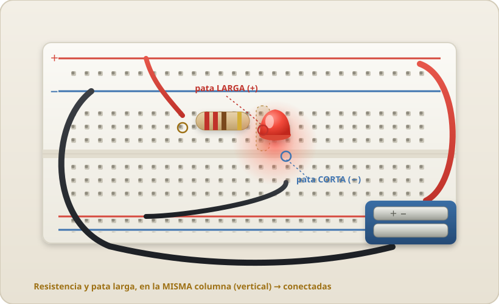
El LED y la resistencia pinchados en la protoboard, con los rieles + y −
Hazlo
Mete la pata larga del LED en un agujero cualquiera del centro. Mete una punta de la resistencia en otro agujero de la MISMA columna (la línea vertical de 5 agujeros que va hacia el canal del medio).
Lleva el + de la pila (con un cable) al riel rojo de arriba, y el − al riel azul.
Con cables, une el riel rojo a la resistencia y el riel azul a la pata corta del LED. Enciende.
Ahora mueve la resistencia a la columna de al lado, sin tocar el LED. Mira qué pasa.
Observa
Mientras la resistencia y el LED comparten columna, el LED enciende. En cuanto mueves la resistencia a otra columna, se apaga: aunque estén a un milímetro, ya no están conectados.
¿Por qué?
Por dentro, la protoboard tiene tiras de metal escondidas. Los 5 agujeros de cada media columna (los que van en vertical hasta el canal del medio) están unidos entre sí (son "el mismo punto"), pero cada columna está separada de las de al lado. El canal del medio parte cada columna en dos mitades que no se tocan. Además, los dos rieles largos de los bordes (rojo y azul) recorren toda la placa a lo largo: son autopistas para el + y el −. La protoboard sirve para conectar piezas sin soldar, solo pinchándolas.
Ve más allá
Sin mirar la explicación, dibuja en un papel qué agujeros de tu protoboard crees que están unidos por dentro. Luego compruébalo con el LED. ¿Acertaste?
Bloque B
Controlar la corriente
04
La resistencia
El "grifo" que frena la electricidad
Tiempo: 20 minNivel: fácil
NecesitasProtoboard + LEDResistencia 220Ω1kΩ10kΩ
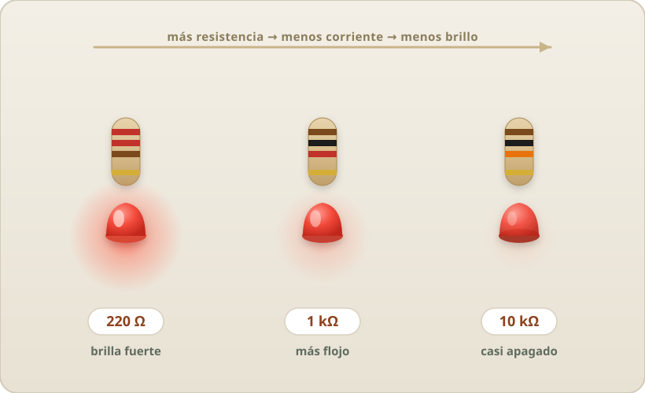
El mismo circuito con tres resistencias: a más ohmios, menos brillo
Hazlo
Monta el LED con la resistencia de 220Ω. Fíjate en el brillo.
Cambia solo la resistencia por la de 1kΩ (1000Ω). Mira el brillo otra vez.
Ahora la de 10kΩ (10.000Ω). Y observa.
Ordena las tres de más brillante a más apagado.
Observa
Cuanto más grande es el número de la resistencia, más flojo brilla el LED. Con 10kΩ apenas se ve un puntito. Y sin embargo la pila es la misma todo el rato.
¿Por qué?
Una resistencia frena la corriente, como una tubería estrecha frena el agua. Más ohmios = tubería más estrecha = pasa menos corriente = el LED brilla menos. Y ahora se entiende la regla de seguridad: el LED necesita SIEMPRE una resistencia porque, a pelo, dejaría pasar tanta corriente que se quemaría. La resistencia es su chaleco salvavidas.
Ve más allá
Pon dos resistencias de 220Ω una detrás de otra (en fila). ¿Brillará más o menos que con una sola? Pruébalo. (Pista: es como poner dos tramos estrechos seguidos.)
05
Código de colores
Lee una resistencia sin aparatos
Tiempo: 15 minNivel: fácil
NecesitasVarias resistenciasMultímetro (opcional)
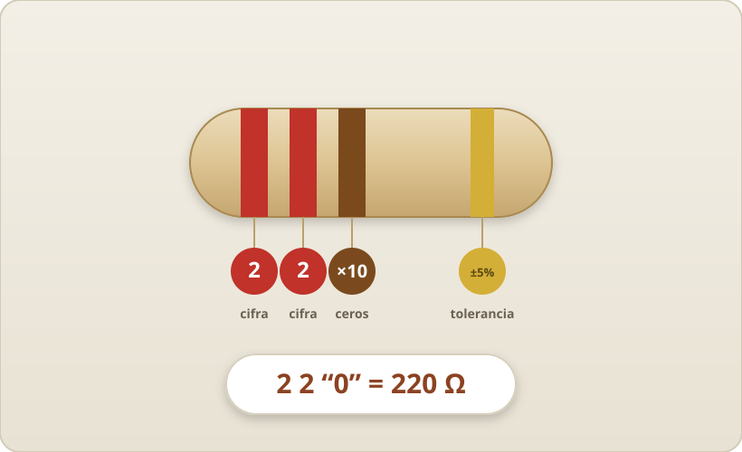
Cada banda es una cifra: rojo · rojo · marrón = 220 Ω
Hazlo
Coge una resistencia y fíjate en sus anillos de colores. Ponla con la banda dorada (o plateada) a la derecha.
Lee los tres primeros anillos de izquierda a derecha usando la tabla de abajo.
Primer anillo = primera cifra. Segundo = segunda cifra. Tercero = cuántos ceros añadir.
Si tienes multímetro, mídela y comprueba si acertaste.
Observa
Ejemplo: rojo–rojo–marrón = 2, 2 y un cero = 220Ω. Marrón–negro–rojo = 1, 0 y dos ceros = 1000Ω = 1kΩ.
¿Por qué?
Las resistencias son diminutas: no cabe escribir el número, así que se pinta con un código de colores internacional. Cada color es una cifra. El último anillo (dorado o plateado, un poco separado) indica la tolerancia: cuánto se puede desviar del valor exacto.
Color
Cifra
Ceros (×)
Negro
0
—
Marrón
1
0
Rojo
2
00
Naranja
3
000
Amarillo
4
0 000
Verde
5
00 000
Azul
6
000 000
Violeta
7
—
Gris
8
—
Blanco
9
—
06
Voltaje
Apila pilas y sube el "empuje"
Tiempo: 20 minNivel: fácil
Necesitas2–3 pilas AAPortapilasZumbador o motorcitoLED + 220Ω
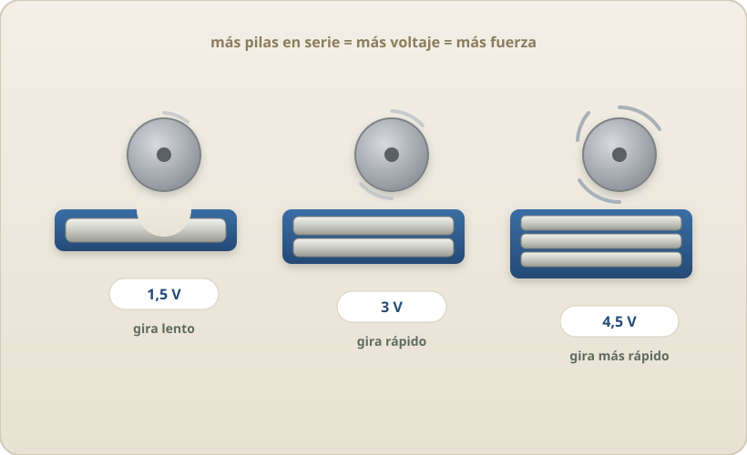
Más pilas en serie = más voltaje = el motor gira más rápido
Hazlo
Haz sonar el zumbador (o girar el motorcito) con 1 pila (1,5 V). Escucha/mira con qué fuerza.
Añade una segunda pila en fila, + de una tocando el − de la otra (3 V). Prueba.
Prueba con 3 pilas (4,5 V). ¿Suena más fuerte? ¿El motor gira más rápido?
Observa
Cuantas más pilas pones en fila, más fuerte suena el zumbador y más rápido gira el motor. Las pilas "se suman".
¿Por qué?
El voltaje es el empuje. Poner pilas en fila (en serie) es como apilar depósitos de agua uno encima de otro: la presión se suma. Una pila AA da 1,5 V; dos en serie, 3 V; tres, 4,5 V. Más empuje mueve más corriente, y por eso el motor corre más.
OjoMás voltaje también quema antes un LED. Por eso, al subir a 4,5 V o al usar la pila de 9 V, la resistencia del LED es aún más importante.
Ve más allá
¿Y si pones la segunda pila al revés (los dos + juntos)? Predice y prueba con el motor. ¿Qué crees que pasará con el "empuje"?
En serie comparten un solo camino; en paralelo cada LED tiene el suyo
Hazlo
En serie: conecta los 2 LEDs en fila, uno detrás de otro (pata corta de uno con pata larga del siguiente), con una resistencia. Enciende y mira el brillo.
Con el circuito en serie encendido, saca un LED de su sitio. Observa el otro.
En paralelo: ahora monta los 2 LEDs "en paralelo" (las dos patas largas juntas al +, las dos cortas juntas al −), cada uno con su resistencia. Enciende.
Saca uno de los dos. Observa el que queda.
Observa
En serie, los dos LEDs brillan un poco menos, y si sacas uno… se apagan los dos. En paralelo, brillan más y, si sacas uno, el otro sigue encendido tan tranquilo.
¿Por qué?
En serie hay un solo camino: la corriente pasa por los dos LEDs obligatoriamente, así que si cortas uno, cortas el anillo entero (se apagan ambos), y el empuje se reparte entre los dos (brillan menos). En paralelo hay dos caminos independientes: cada LED tiene su propia ruta, así que uno no depende del otro.
En la vida realLas luces de tu casa van en paralelo: por eso puedes apagar la lámpara del salón sin que se apague la de la cocina. Las antiguas luces de árbol de Navidad iban en serie… y si se fundía una bombilla, ¡se apagaban todas!
Ve más allá
Monta 3 LEDs en paralelo. ¿Crees que la pila durará más o menos tiempo que con uno solo? ¿Por qué?
08
Interruptores
Abrir y cerrar el paso a voluntad
Tiempo: 20 minNivel: fácil
NecesitasPulsador del kitLED + 220Ω2 clips + papel AluPinza de ropa
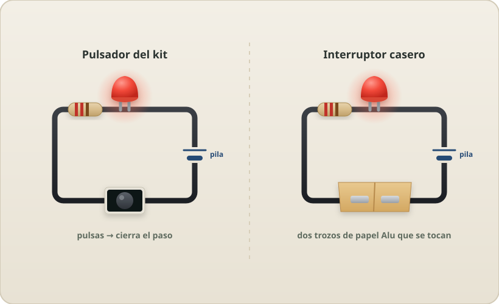
El pulsador del kit y un interruptor casero hacen exactamente lo mismo
Hazlo
Intercala el pulsador en el circuito del LED (rompe el anillo y mete el botón en medio). Púlsalo.
Ahora fabrica tu propio interruptor: dos clips metálicos, uno en cada punta de cable. Al juntarlos, enciende; al separarlos, apaga.
Versión pinza: pega papel de aluminio en las dos mitades de una pinza de la ropa para que se toquen al cerrar.
Observa
El LED solo luce mientras el metal se toca. Tu interruptor casero funciona exactamente igual que el botón "de verdad" del kit.
¿Por qué?
Un interruptor no es más que un trocito de camino que puedes abrir o cerrar con la mano. Cerrado, completa el anillo y pasa la corriente. Abierto, corta el anillo. Todos los interruptores del mundo —el de la luz de tu cuarto incluido— hacen solo eso: juntar o separar dos metales.
Ve más allá
Coloca dos interruptores en serie: el LED solo enciende si los dos están cerrados a la vez (eso es una puerta "Y"). Ahora ponlos en paralelo: enciende si cualquiera está cerrado (una puerta "O").
Al girar el mando, el brillo sube y baja de forma suave
Hazlo
El potenciómetro tiene 3 patas. Usa la del centro y una de los lados.
Colócalo en serie con el LED y su resistencia de 220Ω (que hace de seguridad).
Enciende y gira el mando despacio de un extremo a otro.
Observa
Al girar, el LED pasa de brillar fuerte a apagarse casi del todo, de forma suave. Es un regulador (como el de algunas lámparas o el volumen de un altavoz).
¿Por qué?
Un potenciómetro es una resistencia que puedes cambiar girando. Por dentro hay un caminito de material resistivo y un cursor que se desliza: cuanto más camino recorre la corriente, más resistencia encuentra y menos brilla el LED. Es la práctica 4, pero pudiendo elegir el valor "en directo" con la mano.
Ve más allá
Con el multímetro en modo ohmios (Ω), mide entre la pata central y una lateral mientras giras. Verás el número subir y bajar. ¿Coincide el máximo con lo que pone escrito en el potenciómetro?
Bloque D
Componentes con truco
10
Sensores
La LDR: una resistencia que "ve" la luz
Tiempo: 20 minNivel: medio
NecesitasLDR (sensor de luz)LED + 220ΩPortapilas 4,5VLinternaTransistor NPN (opcional)
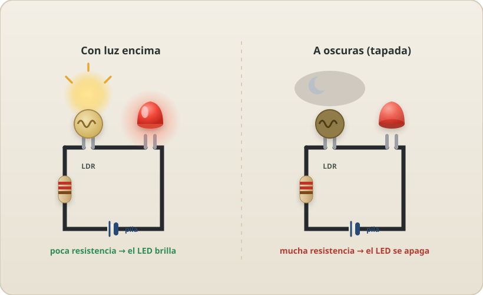
Con luz la LDR deja pasar; tapada, frena la corriente y el LED se apaga
Hazlo
Pon la LDR en serie con el LED y su resistencia de 220Ω. Enciende.
Tapa la LDR con la mano, dejándola a oscuras. Mira el LED.
Ahora ilumínala con una linterna. Mira otra vez.
Observa
A oscuras el LED se apaga o brilla muy poco; con luz encima, brilla más. El circuito "nota" cuánta luz hay, sin que tú toques nada.
¿Por qué?
Una LDR es una resistencia que cambia de valor con la luz: a oscuras tiene mucha resistencia (frena la corriente), y con luz, poca. Eso es un sensor: un componente que convierte algo del mundo (aquí, la luz) en un cambio eléctrico. Existen sensores parecidos para el calor, la humedad o la presión.
Esto es enormeAcabas de construir el corazón de una farola automática: "si hay poca luz, cambia algo en el circuito". Lo usarás en el proyecto final.
Ve más allá
Con el multímetro en ohmios, mide la LDR tapada y destapada. Apunta los dos números: verás la diferencia enorme entre "a oscuras" y "con luz".
Detector de sombra
Con la LDR y el LED en serie (justo lo que ya montaste), acerca la mano por encima de la LDR sin tocarla: tu sombra le tapa la luz y el LED baja; apartas la mano y sube. Ya tienes un detector de sombra: reacciona a lo que le pasa por delante. Aquí, más sombra = menos luz = menos brillo.
Al revés: con transistor
¿Y si quieres que el LED se ENCIENDA justo cuando hay sombra (una luz de noche)? Hay que invertir la señal con un transistor: un interruptor electrónico que una corriente diminuta abre o cierra. La LDR y una resistencia fija le "avisan" de cuánta luz hay: a oscuras el transistor se cierra y enciende el LED; con luz, se abre y lo apaga.
Pieza estrellaEl transistor es la base de toda la electrónica moderna: dentro de un móvil hay miles de millones. Aquí lo usas como un grifo que una corrientita abre para dejar pasar otra más grande. Si tu kit no trae uno (NPN, tipo PN2222 o BC547), guárdalo para el segundo curso.
Se carga con la pila y luego alimenta el LED mientras se descarga
Hazlo
El condensador grande tiene + y − (la pata corta y una raya marcan el −). Respeta la polaridad.
Cárgalo: toca sus patas a la pila unos 3 segundos (+ con +, − con −).
Quita la pila y, sin esperar, conecta el condensador a un LED con su resistencia (+ con pata larga).
Observa
¡El LED se enciende un momento y se va apagando poco a poco, aunque la pila ya no está! El condensador tenía electricidad guardada.
¿Por qué?
Un condensador almacena carga eléctrica, como un cubo que se llena de agua y luego la suelta. Al conectarlo a la pila se "llena"; al conectarlo al LED se "vacía" a través de él, y por eso la luz se apaga suave (el depósito se va quedando sin agua). Cuanto más grande el condensador (más µF) y mayor la resistencia, más tarda en apagarse.
SeguridadUsa solo condensadores pequeños (hasta 9 V, hasta ~1000 µF) y descárgalos siempre a través del LED, nunca juntando sus dos patas directamente.
Ve más allá
Repite con un condensador más grande y con la resistencia de 1kΩ en lugar de 220Ω. ¿Dura la luz más o menos tiempo? Cronométralo.
En un sentido enciende; girado del revés, bloquea el paso
Hazlo
Monta el LED con su resistencia y enciéndelo (pata larga hacia el +).
Ahora dale la vuelta al LED (pata larga hacia el −). Observa.
Vuélvelo a girar. Este es el misterio que dejaste pendiente en la práctica 1.
Observa
En un sentido enciende; girado del revés, no enciende nada, por mucho que insistas. El LED tiene un lado "correcto".
¿Por qué?
Un LED es un tipo de diodo, y un diodo es una válvula de un solo sentido: deja pasar la corriente en una dirección y la bloquea en la contraria. Por eso el LED tiene pata larga (+, ánodo) y corta (−, cátodo): hay que respetar el sentido. En la práctica 1 dijimos "prueba a darle la vuelta": ya sabes por qué no encendía.
El concepto: polaridadQue una pieza tenga un lado + y un lado −, y haya que conectarla en su orden para que funcione, se llama polaridad. Tienen polaridad el LED, la pila, los condensadores y los motores (marca el sentido de giro). Otras piezas no tienen polaridad y da igual cómo las pongas: la resistencia, un cable, un interruptor o el pulsador.
Ve más allá
Los diodos protegen aparatos por si metes la pila al revés. ¿Se te ocurre por qué un diodo "de sentido único" evitaría que algo se estropee con la pila puesta del revés?
Bloque E
Mídelo y constrúyelo
13
Medir de verdad · Ley de Ohm
El multímetro: poner números a lo que ya sientes
Tiempo: 30 minNivel: medio
NecesitasMultímetroPilaResistencia conocidaLED
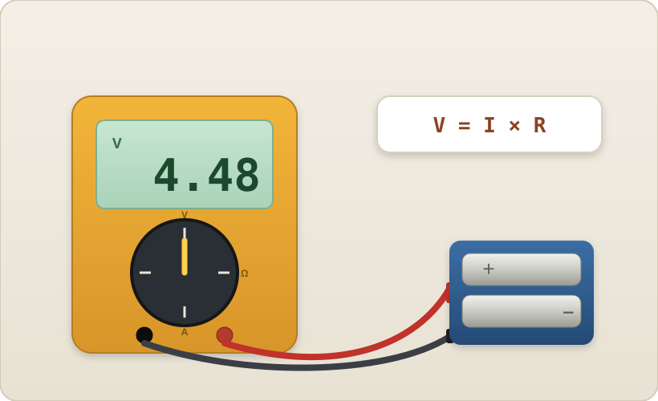
El multímetro mide voltios, ohmios y amperios para comprobar V = I × R
Hazlo
Voltaje: pon el multímetro en modo V y toca las dos puntas en los dos polos de la pila. Lee el número (algo cercano a 1,5 o 4,5 V).
Resistencia: modo Ω, mide una resistencia suelta. Compárala con lo que leíste por colores en la P5.
Corriente: modo mA, y coloca el multímetro en medio del circuito (en serie, como una pieza más). Lee cuánta corriente pasa.
Observa
La pila da el voltaje que esperabas. La resistencia mide casi lo que decían sus colores. Y si divides el voltaje entre la resistencia, ¡te sale más o menos la corriente que marca el aparato!
¿Por qué?
Estos tres números están unidos por la regla más famosa de la electrónica, la Ley de Ohm: Voltaje = Corriente × Resistencia (V = I × R). Es puro sentido común de tubería: más empuje (V) → más corriente (I); más obstáculo (R) → menos corriente. Llevas 12 prácticas sintiendo esta ley con las manos; ahora solo le has puesto números.
CompruébaloCon 4,5 V y una resistencia de 220Ω: 4,5 ÷ 220 ≈ 0,020 A = 20 mA. Mira si tu multímetro marca algo parecido.
Ve más allá
Mide la corriente con 220Ω, luego con 1kΩ, luego con 10kΩ. Haz una tablita. ¿Se cumple que a más ohmios, menos miliamperios? Acabas de hacer ciencia con datos.
Cómo se usa
El multímetro tiene una rueda (el dial) para elegir QUÉ mides: V voltaje, Ω resistencia, A (o mA) corriente. Las puntas van en dos agujeros: la negra siempre en COM; la roja en VΩ para voltaje y resistencia, y solo la cambias al agujero de A para medir amperios.
Regla de oroEl voltaje se mide en paralelo (tocas los dos lados de la pieza, sin cortar nada). La corriente se mide en serie (abres el circuito y metes el multímetro en medio). Nunca midas amperios tocando los dos polos de la pila directos: es un cortocircuito por el aparato.
Modo continuidad (pitido)
Casi todos los multímetros traen un modo con un dibujito de sonido (•)))). En ese modo, si tocas dos puntos y entre ellos hay camino (algo que conduce), el aparato PITA; si no, se calla. Sirve para comprobar sin mirar: ¿este cable está roto por dentro? ¿estas dos patas están de verdad unidas en la protoboard? Tocas los dos extremos: si pita, hay conexión.
Ya lo conocesEs un detector de circuito cerrado de bolsillo: justo lo de la práctica 1, pero te avisa con un pitido en vez de encender un LED.
Bloque F
Circuitos que puedes usar
14
El conmutador
Elige qué LED enciende
Tiempo: 20 minNivel: fácil
Necesitas2 LEDs de colores2 resistencias 220ΩInterruptor o cablePortapilas
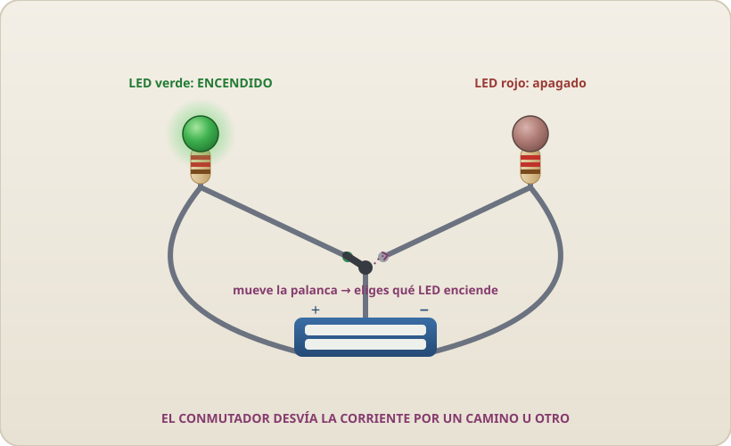
La palanca desvía la corriente: enciende el verde o el rojo, a elegir
Hazlo
Monta dos LEDs (uno verde y uno rojo), cada uno con su resistencia. Une las dos patas cortas (−) y llévalas al − de la pila.
La pata larga de cada LED va a un lado de un conmutador (o toca con un cable un punto u otro).
El punto común del conmutador, al + de la pila. Ahora mueve la palanca de un lado a otro.
Observa
Solo enciende el LED al que apunta la palanca. Al cambiarla, uno se apaga y el otro se enciende. Nunca los dos a la vez.
¿Por qué?
Un conmutador desvía la corriente por un camino u otro, como un cambio de agujas en las vías del tren. La corriente solo puede ir por donde la palanca la manda. Así funcionan un montón de selectores que usas cada día.
IdeaCon esto ya tienes medio semáforo: rojo o verde, a tu voluntad.
Ve más allá
¿Y si quieres que los dos LEDs enciendan a la vez? Ya sabes cómo: eso es conectarlos en paralelo (práctica 7), sin el conmutador.
Con el interruptor cerrado, la corriente hace girar el motor y la hélice
Hazlo
Conecta el motor a la pila con un interruptor en medio (motor → interruptor → pila → motor).
Encaja la hélice en el eje del motor.
Cierra el interruptor y aparta la mano de la hélice.
Observa
El motor gira y la hélice mueve el aire: notas la brisa. Al abrir el interruptor, se para poco a poco.
¿Por qué?
Dentro del motor, la corriente crea magnetismo que empuja y hace girar el eje. La electricidad no solo enciende luces: también mueve cosas. Es el mismo principio de los ventiladores, los juguetes y los coches eléctricos.
OjoEl motor pide más corriente que un LED, así que no lleva resistencia (ya tiene la suya). Si se calienta o la hélice se atasca, desconéctalo.
Ve más allá
Da la vuelta a las pilas (+ y − al revés). ¿La hélice gira al contrario? Con los motores, cambiar el sentido de la corriente cambia el sentido del giro.
Con el pulsador es un timbre; con la LDR, una alarma que suena sola
Hazlo
Conecta el zumbador y el pulsador en serie con la pila (pila → pulsador → zumbador → pila).
Si el zumbador tiene pata + y −, respétalas (como el LED).
Aprieta el pulsador.
Observa
Suena mientras aprietas; al soltar, se calla. Acabas de montar un timbre.
¿Por qué?
El zumbador convierte la corriente en sonido: por dentro vibra muy deprisa y empuja el aire. Con el pulsador decides cuándo pasa la corriente, y por eso suena solo al apretar.
Ve más allá
Cambia el pulsador por la LDR (práctica 10). Ahora el zumbador suena cuando le llega la luz (o cuando la tapas): acabas de construir una alarma que se dispara sola.
17
Circuito y juego
El juego del pulso firme (cable trampa)
Tiempo: 30 minNivel: medio
NecesitasAlambre rígidoCable con pinzasZumbador (o LED)Aro de alambre + mango
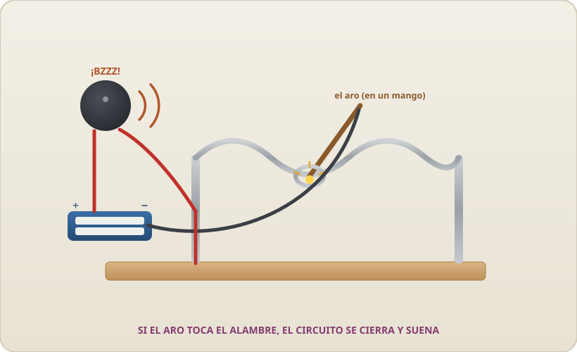
Pasa el aro por el alambre sin tocarlo; si lo rozas, se cierra el circuito y suena
Hazlo
Dobla un alambre largo en curvas (el recorrido) y sujétalo de pie entre dos soportes.
Haz un aro con otro trozo de alambre, atado a un palito (el mango). Pásalo alrededor del recorrido.
Conecta en serie: pila → zumbador → un extremo del recorrido; y con el cable de pinza, del otro polo de la pila al aro.
Mueve el aro de un extremo al otro sin tocar el alambre.
Observa
Mientras no lo tocas, silencio. En cuanto el aro roza el alambre… ¡BZZZ! Has cerrado el circuito sin querer.
¿Por qué?
Es un circuito normalmente abierto que se cierra al tocar. Justo lo contrario de la práctica 1: allí cerrabas el anillo a propósito; aquí ganas si NO lo cierras. Todo lo que has aprendido —circuito cerrado, conductores, el zumbador—, junto, en un juego.
Ve más allá
Añade un LED además del zumbador, haz el recorrido más retorcido, o pon una regla de "3 toques y pierdes". Reta a tu familia a cruzarlo.
Reto final · elige uno
Ahora construye algo tuyo
Ya conoces todas las piezas. Estos proyectos no llevan instrucciones paso a paso a propósito: la gracia es que tú diseñes el circuito juntando lo que ya sabes. Primero hazlo, y luego explícale a alguien por qué funciona.
usa la P8 y la P1
Linterna de bolsillo
Una pila, un LED potente (o varios en paralelo) y tu propio interruptor casero, montado en una caja de cartón. Encender y apagar con estilo.
usa la P10
Luz de noche automática
Con la LDR, consigue que un LED brille más cuanto más oscura está la habitación. La base de las farolas que se encienden solas al anochecer.
usa la P8
Juego del pulso
Dobla un alambre en curvas y pásale un aro sin tocarlo. Si el aro roza el alambre, cierra el circuito y suena el zumbador. ¡Has perdido!
usa la P2
Detector de metales-conductores
Un probador con dos puntas y un LED: tócalo contra cualquier objeto de casa y descubre, en una tarde, qué cosas conducen y cuáles no.
¿Y los muchos sensores del kit (temperatura, humedad, distancia…)? Esos piden un pequeño cerebro que los lea y decida qué hacer: el Arduino programado. Eso ya es el segundo curso — pero toda la electrónica que necesitas para entenderlo la acabas de aprender aquí.
Chuleta rápida
Las palabras clave, en una frase
Corriente
La electricidad que fluye por el circuito. amperios (A)
Voltaje
El empuje que hace moverse a la corriente. voltios (V)
Resistencia
Lo que frena la corriente. ohmios (Ω)
Circuito
El camino cerrado en anillo por donde va la corriente.
Conductor
Material que deja pasar la electricidad (metales).
Aislante
Material que NO la deja pasar (plástico, goma).
Serie
Piezas puestas una detrás de otra, un solo camino.
Paralelo
Piezas en caminos separados e independientes.
LED
Diodo que da luz. Tiene + (pata larga) y − (corta).
Diodo
Válvula que deja pasar la corriente en un solo sentido.
Condensador
Pequeño depósito que guarda y suelta electricidad.
Ley de Ohm
La regla que las une todas: V = I × R
Polaridad
Tener un lado + y un lado −: hay que respetar el orden (LED, pila, condensador, motor).